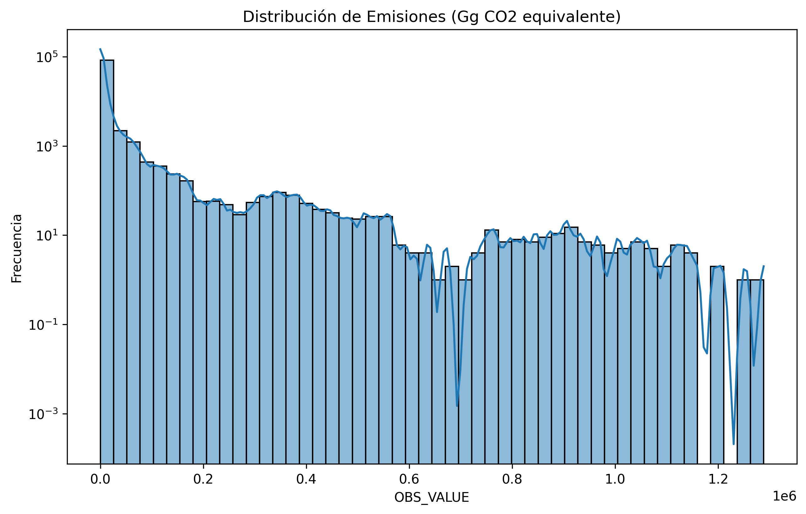

Resumen General
El dataset analizado contiene información sobre emisiones de gases de efecto invernadero con:
- Total de registros: 90236
- Total de columnas: 10
- Columnas numéricas: TIME_PERIOD, OBS_VALUE
Estadísticas Descriptivas
Columna: OBS_VALUE
| Media | Mediana | Desviación estándar | Rango | IQR | |
|---|---|---|---|---|---|
| Media | 9499.675365 | 444.28523 | 50110.730533 | 1.288425e+06 | 2695.640752 |
| Mediana | 9499.675365 | 444.28523 | 50110.730533 | 1.288425e+06 | 2695.640752 |
| Desviación estándar | 9499.675365 | 444.28523 | 50110.730533 | 1.288425e+06 | 2695.640752 |
| Rango | 9499.675365 | 444.28523 | 50110.730533 | 1.288425e+06 | 2695.640752 |
| IQR | 9499.675365 | 444.28523 | 50110.730533 | 1.288425e+06 | 2695.640752 |
Calidad de Datos
| Valores faltantes | |
|---|---|
| Format_name | 0 |
| airpol | 0 |
| TIME_PERIOD | 0 |
| Unit | 0 |
| geo | 0 |
| Sector_code | 0 |
| Sector_name | 0 |
| OBS_VALUE | 0 |
| Notation | 90236 |
| DataSource | 0 |
Valores Negativos
Se detectaron 6887 valores negativos en OBS_VALUE, que fueron filtrados para este análisis. Ver detalles en negative_values.csv.
Detección de Outliers
- TIME_PERIOD: 0 valores atípicos detectados (Z > 3)
- OBS_VALUE: 981 valores atípicos detectados (Z > 3)
Visualizaciones Clave
Metodología y Fuentes
El siguiente análisis visual representa las emisiones de gases de efecto invernadero en la Unión Europea, medida en Gigagramos de CO2 equivalente (Gg CO2eq). Los datos provienen de la Agencia Europea de Medio Ambiente (EEA) y cubren el período 2010-2023 utilizando la clasificación IPCC 2006.
- Fuente de datos: European Environment Agency (EEA)
- Última actualización: July 2025
- Métrica: Emisiones brutas (inventario nacional)
Distribución de Emisiones (OBS_VALUE)
Distribución Sectorial

Comparativa por País

Evolución Temporal
Matriz de Correlación de Emisiones

Correlaciones Significativas (>0.8)
| País 1 | País 2 | Correlación | |
|---|---|---|---|
| 0 | Austria | Spain | 0.804801 |
| 1 | Belgium | Denmark | 0.951995 |
| 2 | Belgium | France | 0.954239 |
| 3 | Belgium | Germany | 0.853165 |
| 4 | Belgium | Hungary | 0.833771 |
| 5 | Belgium | Italy | 0.915028 |
| 6 | Belgium | Netherlands | 0.946316 |
| 7 | Belgium | Sweden | 0.969915 |
| 8 | Bulgaria | Czech Republic | 0.894353 |
| 9 | Bulgaria | Estonia | 0.826636 |
| 10 | Bulgaria | Lithuania | 0.806721 |
| 11 | Bulgaria | Poland | 0.846865 |
| 12 | Bulgaria | Romania | 0.896813 |
| 13 | Bulgaria | Slovakia | 0.883893 |
| 14 | Czech Republic | Germany | 0.926576 |
| 15 | Czech Republic | Hungary | 0.908122 |
| 16 | Czech Republic | Malta | -0.808937 |
| 17 | Czech Republic | Romania | 0.951195 |
| 18 | Czech Republic | Slovakia | 0.970904 |
| 19 | Denmark | France | 0.931431 |
| 20 | Denmark | Germany | 0.895332 |
| 21 | Denmark | Hungary | 0.801582 |
| 22 | Denmark | Italy | 0.834760 |
| 23 | Denmark | Netherlands | 0.930319 |
| 24 | Denmark | Sweden | 0.976397 |
| 25 | Estonia | Latvia | 0.803781 |
| 26 | Estonia | Lithuania | 0.865948 |
| 27 | Finland | Italy | 0.870018 |
| 28 | France | Germany | 0.894278 |
| 29 | France | Hungary | 0.815372 |
| 30 | France | Italy | 0.914677 |
| 31 | France | Netherlands | 0.962924 |
| 32 | France | Sweden | 0.931189 |
| 33 | Germany | Hungary | 0.861962 |
| 34 | Germany | Malta | -0.868071 |
| 35 | Germany | Netherlands | 0.876555 |
| 36 | Germany | Romania | 0.913311 |
| 37 | Germany | Slovakia | 0.900184 |
| 38 | Germany | Sweden | 0.888178 |
| 39 | Hungary | Romania | 0.872532 |
| 40 | Hungary | Slovakia | 0.921625 |
| 41 | Hungary | Sweden | 0.807295 |
| 42 | Ireland | Portugal | 0.913672 |
| 43 | Ireland | Spain | 0.910111 |
| 44 | Italy | Netherlands | 0.857877 |
| 45 | Italy | Sweden | 0.847537 |
| 46 | Latvia | Lithuania | 0.898088 |
| 47 | Lithuania | Slovakia | 0.806805 |
| 48 | Malta | Romania | -0.846869 |
| 49 | Malta | Slovakia | -0.810316 |
| 50 | Netherlands | Sweden | 0.945613 |
| 51 | Poland | Romania | 0.828571 |
| 52 | Portugal | Spain | 0.892879 |
| 53 | Romania | Slovakia | 0.950112 |
| 54 | Slovenia | Spain | 0.800710 |
Análisis de Valores Atípicos

Top 5 Sectores Contaminantes

Dispersión de Emisiones

Comparación Regional
Emisiones Norte vs Sur
Evolución Países Nórdicos
Conclusiones
- Variabilidad significativa en las emisiones entre diferentes sectores, con Total emissions (UNFCCC) como el sector más contaminante.
- Se detectaron 981 valores atípicos en OBS_VALUE que requieren investigación adicional.
- El país con mayores emisiones promedio es Germany.
- La tendencia general de emisiones es decreciente desde 2010.
- Se filtraron 6887 valores negativos en OBS_VALUE, posiblemente debido a errores de datos o ajustes por captura de carbono.